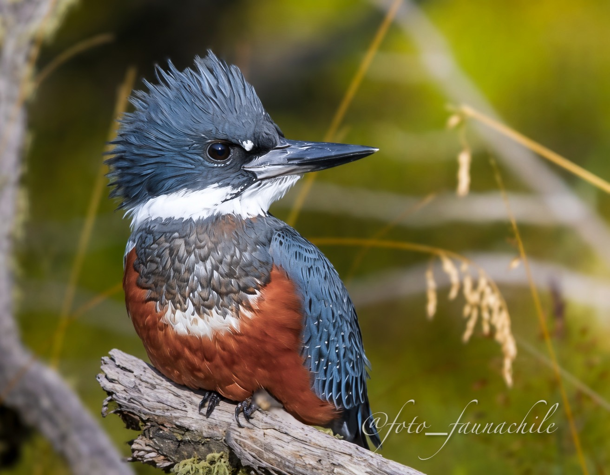

Cazador junto al agua
Se posa cerca de ríos y lagos para observar el agua antes de lanzarse a capturar presas.

RÍOS, LAGOS Y COSTAS
Megaceryle torquata
Un destello azul y rojizo que acompaña las aguas del extremo sur.
Descubre 3 datos de esta especie ↓CONOCE AL PROTAGONISTA
El Martín Pescador Grande suele observarse posado cerca del agua, atento al movimiento bajo la superficie. Su vuelo directo, su potente pico y su contraste de colores lo convierten en una de las aves más reconocibles de los ambientes acuáticos patagónicos.
DESCUBRE LA ESPECIE
Se posa cerca de ríos y lagos para observar el agua antes de lanzarse a capturar presas.
Su silueta robusta, su pico largo y su llamada potente ayudan a reconocerlo en ambientes ribereños.
La calidad del agua y la conservación de las orillas favorecen los ambientes donde se alimenta y reproduce.
SONIDOS DE LA PATAGONIA
Su llamado puede escucharse mientras recorre cursos de agua y sectores costeros. Reproduce el registro para conocer su voz.
AURA TEXTIL
Esta fotografía forma parte del origen visual de Patagonia Salvaje: fauna real de la Patagonia transformada en una propuesta textil que invita a mirar con más atención nuestro entorno.
EXPERIENCIA QR
El producto te invita a conocer y descubrir más sobre cada especie.
← Volver a Los protagonistas